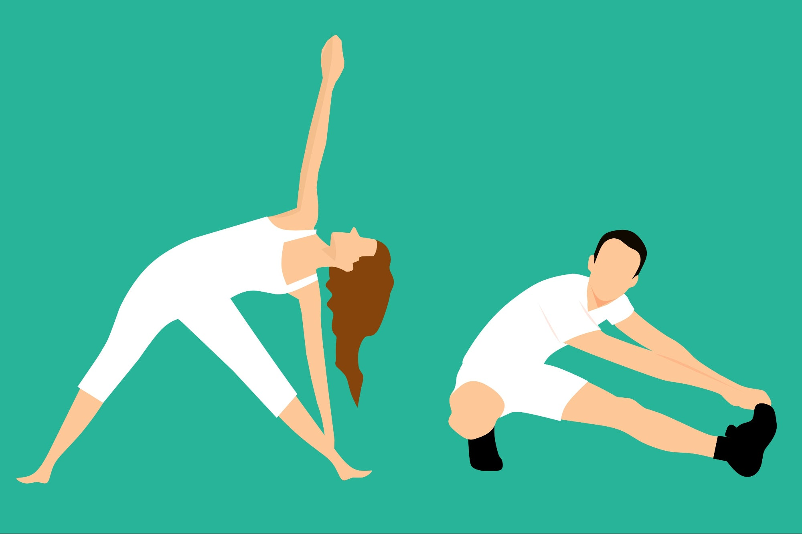
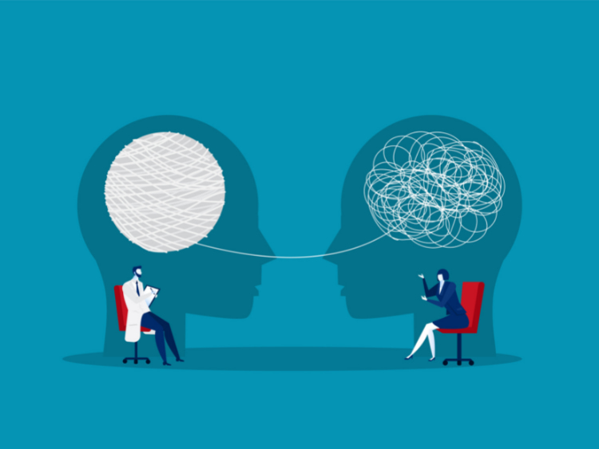
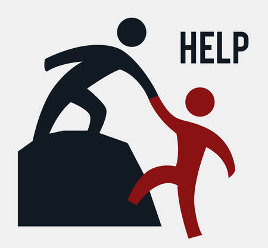

Что такое зависимость?
Зависимость - это состояние, при котором человек теряет контроль над потреблением определенного вещества или выполнением определенного действия. Зависимость может быть как физической, так и психологической.
Типы зависимости
Физическая зависимость
Физическая зависимость характеризуется развитием толерантности к веществу и проявлением абстинентного синдрома при его отмене.
Психологическая зависимость
Психологическая зависимость проявляется в виде непреодолимого желания или навязчивого стремления к употреблению вещества или выполнению действия.
Как справиться с зависимостью?
Справиться с зависимостью можно с помощью профессиональной помощи, поддержки близких и изменения образа жизни. Важно обратиться за помощью и не бояться признать свою проблему.
